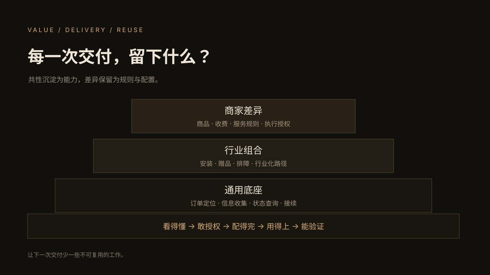
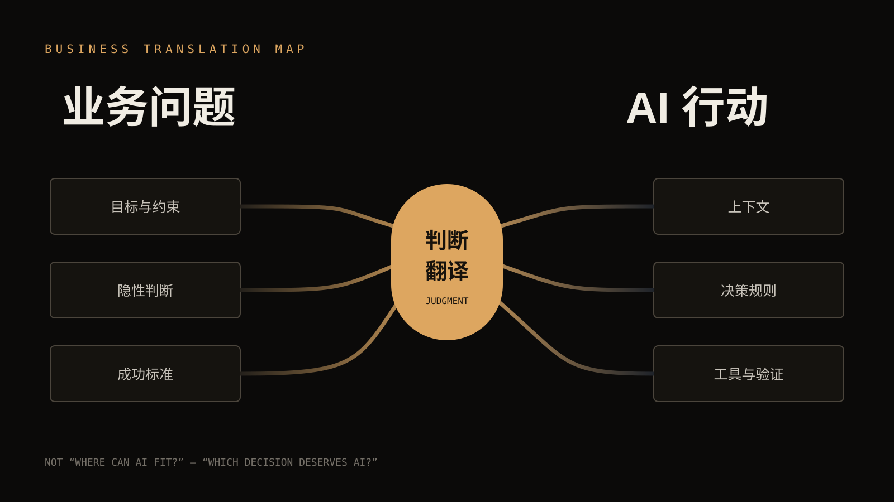
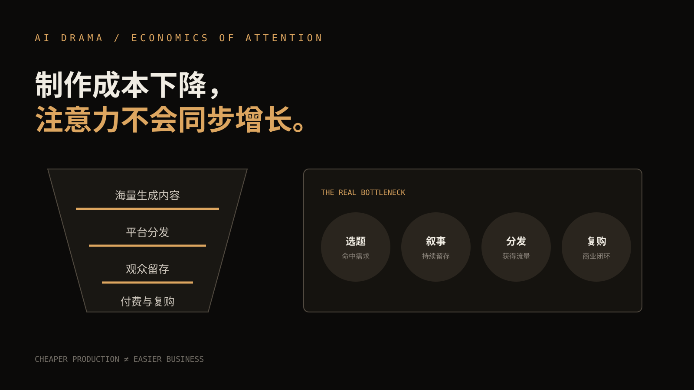
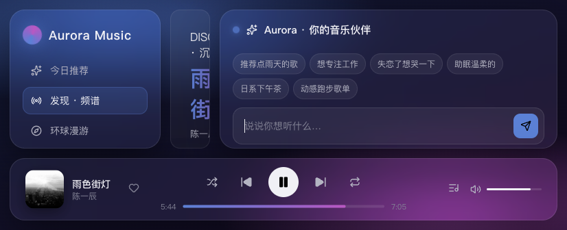
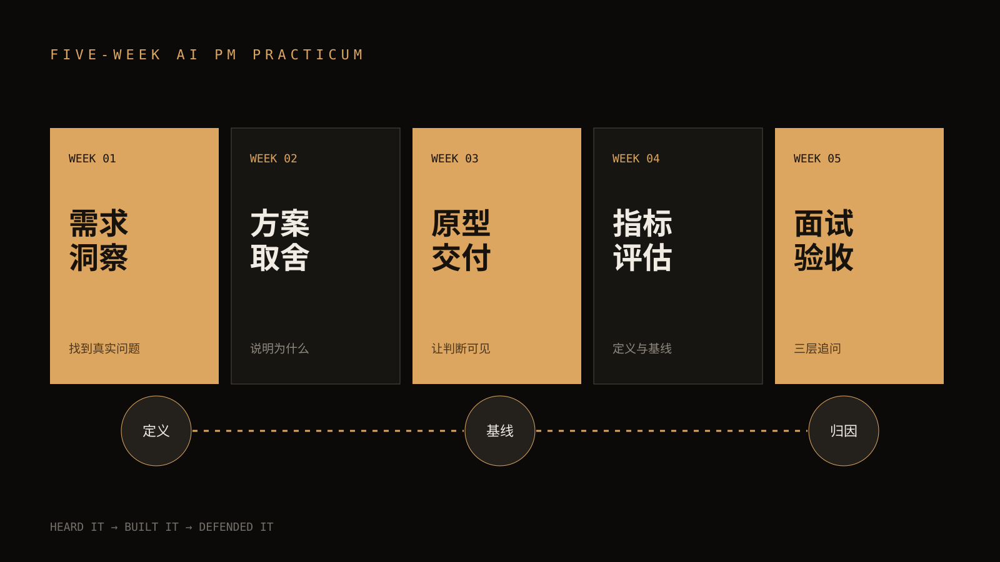

Business first.
AI where it matters.
我是唐哲马（Jamal），长期深耕电商智能客服与服务体验的 AI 产品经理。从消费者诉求到服务系统，从产品判断到团队交付，用真实结果验证价值。
一些 Vibe
阿里巴巴 AI 客服Agent
安装咨询、质量判责、工单接续。看我如何区分执行、授权和完成，让服务真正往前走。

拼多多 · 智能客服与服务体验
从参与鹦鹉智能客服的早期建设，到管理产品团队、独立负责高价值服务体验，连接消费者诉求、服务策略与业务系统。

小八 · 鹦鹉之家
先有一只鸟，才有一个品牌。从楼下的相遇，到角色、贴纸、手办概念与短片。
01 / 03
我也把想象，做成了唱片。
以 TZBABY 的名字，用 AI 创作音乐。五张专辑与 EP，已发布在网易云音乐。


思考与方法

把判断变成可验证的行动
研究不是把问题再描述一遍。证据怎样支持选择，选择怎样进入实现，结果怎样被验证？

从能力供给到服务交付：让价值更容易发生
看得懂、敢授权、配得完。让商家把能力用起来，也让下一次交付少一些不可复用的工作。

懂业务的人，才知道 AI 该用在哪
“我要退款”只有四个字。真正的产品问题，藏在这四个字之后。

我从 Decagon 学到的，不是产品功能
我最关心的不是它增加了什么按钮，而是谁能够持续修改 Agent 的行为。

AI 短剧真的赚钱吗？
生成便宜了，但观众没有因此多出一小时。拆开做作品、做制作服务和做 IP 三种生意。

售后 Agent 的价值，是让事情真正往前走
会解释、会执行、能判责与能闭环，是四个不同的问题。用安装、凭证与工单拆开它们。

为什么我仍然自己做 AI 音乐播放器
频谱怎样呼吸，画面怎样跟上第一次播放。我想让细小的感受也值得认真处理。

非技术背景，怎么真正学会做 AI 产品
五周做完一个项目，再用十五分钟追问，检查每个选择是不是真的想过。
Jamal
我是唐哲马，在阿里巴巴店小蜜做 AI 产品。关注售后、发货物流、商家配置与辅助服务——能力怎样被允许执行，结果怎样被确认。
在拼多多，我参与鹦鹉智能客服的早期产品建设，随后承担产品团队管理，并独立负责高价值服务体验业务。经历覆盖消费者服务、物流协作、智能工单与自助解决平台。
我把自己看作业务与 AI 之间的翻译者：先问清楚要支持什么判断，再建立证据、拆开场景，让结论进入可执行和可验证的行动。工作之外，我以 TZBABY 的名字发布 AI 音乐专辑，也做播客、品牌实验，教授 AI 产品实战。
完整档案：用我做过的产品讲我自己→
我相信的事
- 01
业务优先
先理解真实业务，再判断 AI 在哪里能产生价值。
- 02
让数字可追溯
先分清一轮交互、一通会话和一次执行，再谈数字。系统记录、模型推断与事实要分开。
- 03
状态证明完成
保存草稿、申请提交与处理完成，需要不同证据。聊天承诺不能代替业务状态。
- 04
行动产生判断
研究要回答问题，结论要接到责任和验收。把失败条件也留下，下一次才更可靠。
行事原则
- 01
真实比好听重要
宁愿听尖锐的实话，也不要漂亮的敷衍。
- 02
有自己的判断
不因为流行就接受，也不因为别人说好就降低标准。
- 03
看行动，也看结果
说得再好，最终还是要看有没有做出来、做到位。
- 04
保持好奇，也守住边界
愿意尝试新东西，但重要的决定要自己做。